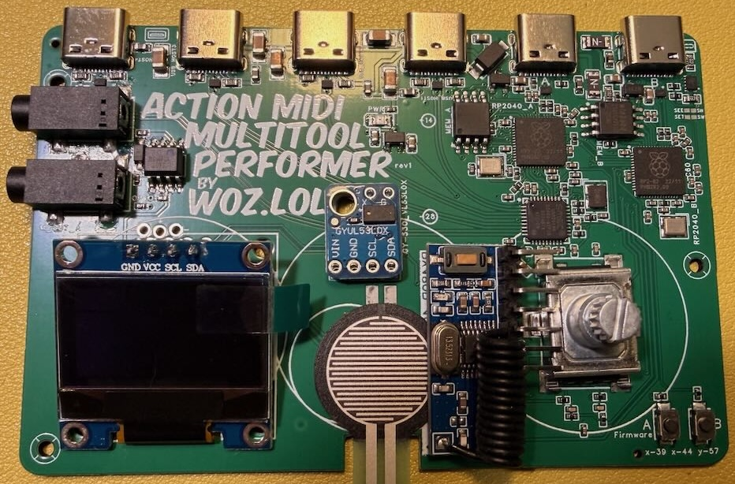
Action Performer
MIDI Performance Automator
Woz / Las Vegas
PCB design, LED displays, MIDI hardware, and sensor-driven installations.
View Projects
Woz builds electronics for art and live environments in Las Vegas. His work includes custom PCBs, LED control systems, MIDI hardware, and interactive exhibits.
Open woz.lolCustom PCBs and Firmware for Entertainment Industry Solutions

MIDI Performance Automator
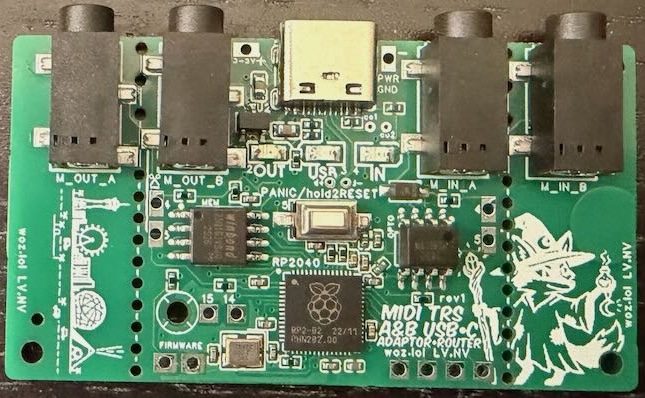
Tiny MIDI Adapter & Router
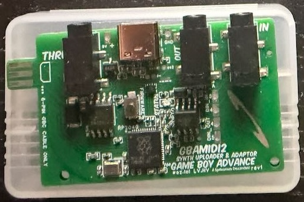
Game Boy Advance MIDI Adapter
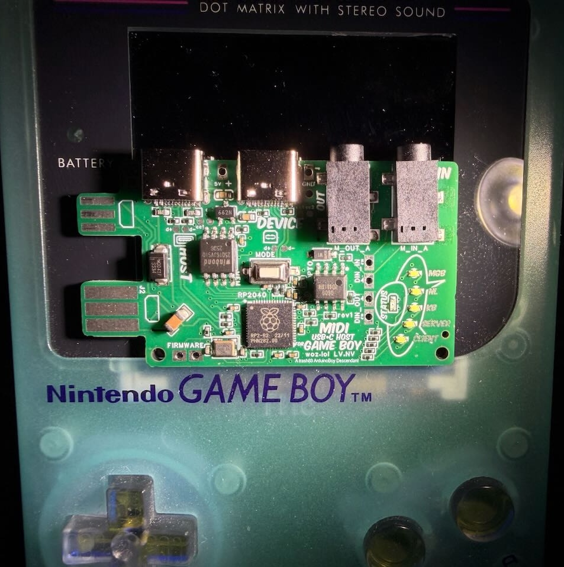
Game Boy MIDI Adapter
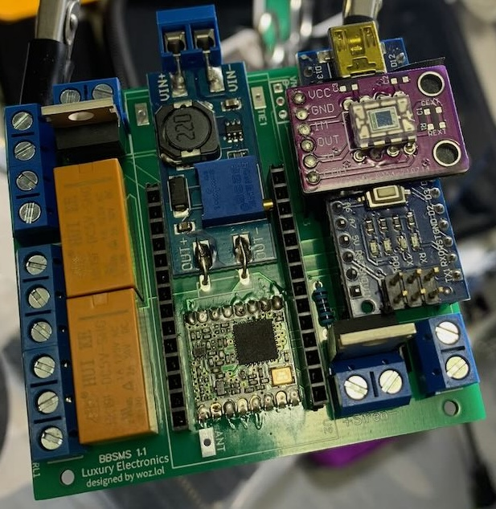
Secure Remote SMS Alert Station
Addressable RGB SD Card GIF Video Player
Power-saving Synchronized LED Closet Light Controller
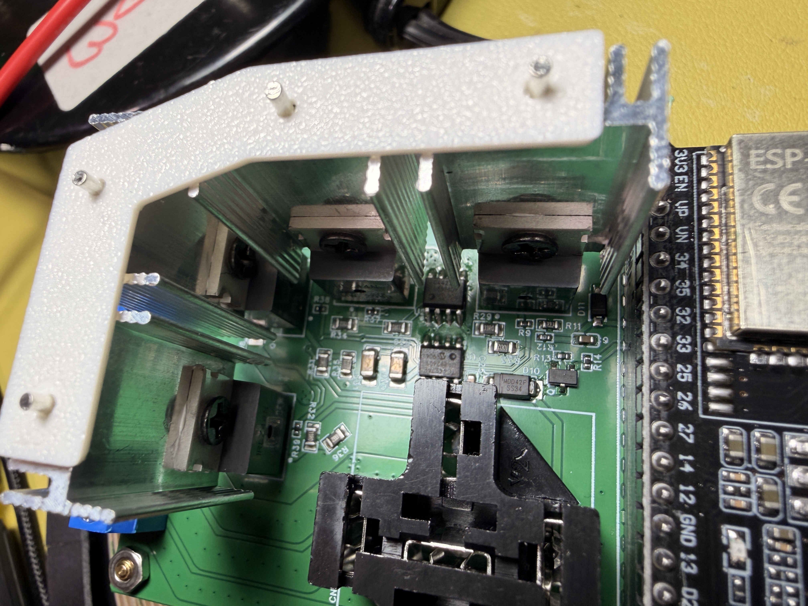
For testing commercial lighting installations.
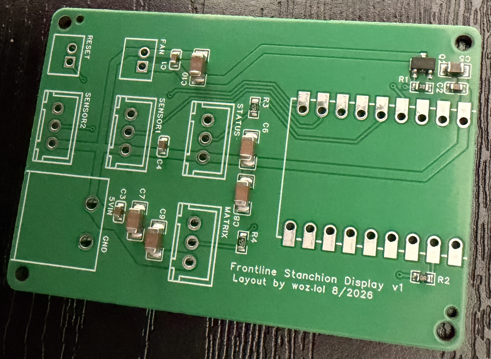
PCB / 05
Custom PCB and component sourcing for a unique freestanding LED message board.
Selected installations from wozLED, including Adore Miami and Caesars Palace Las Vegas.
Open wozLED Gallery
Round LED display installation.
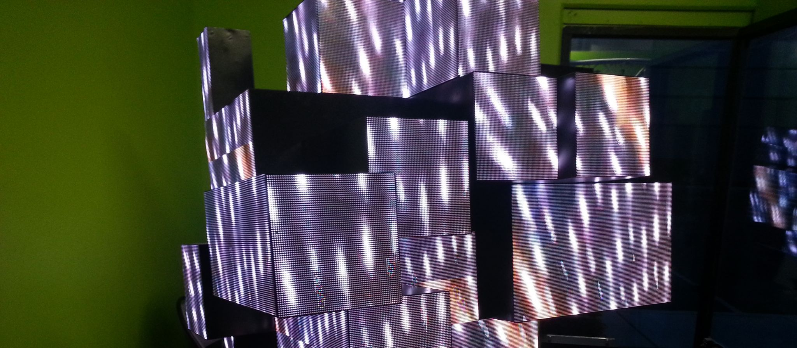
Custom-shaped LED cube sculpture.
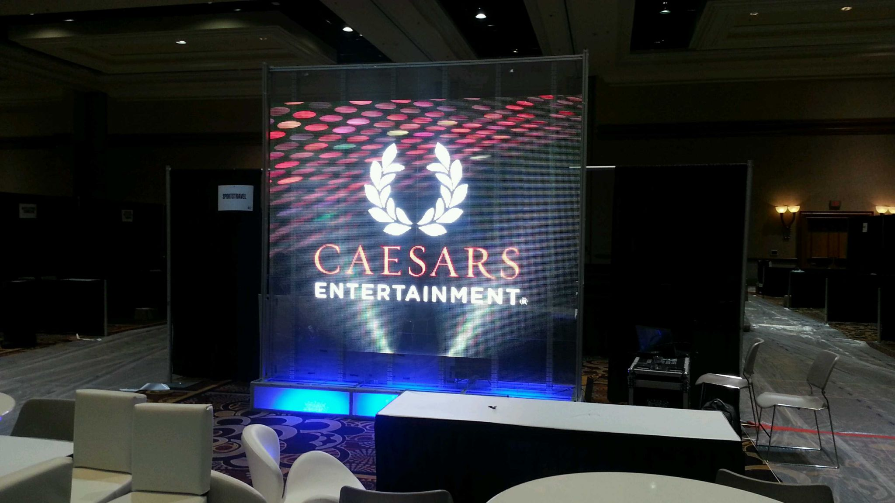
Transparent display for the Bellagio TEAMS Expo.
Projects that combine electronics with performance, sound, and public space.
01 / Magician Projects
Custom devices and mechanisms for durable consistent stage magic.
02 / Lumin & Forge Museum Exhibit
Ultrasonic distance sensors trigger audio files as visitors walk through the exhibit.
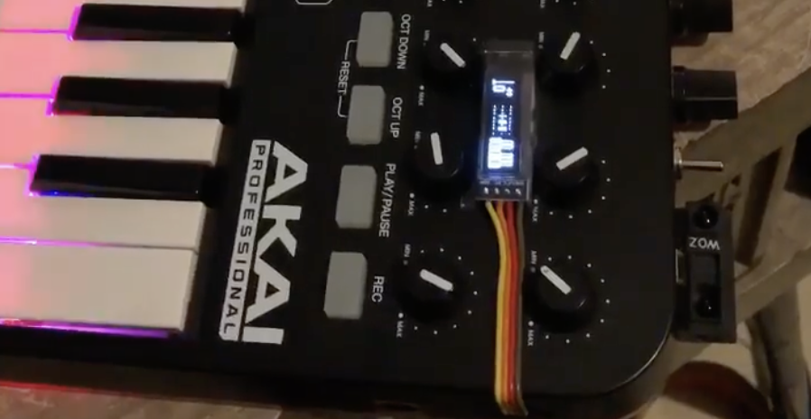
03 / Hot Rod MIDI Controller
A MIDI controller keyboard customized for Kevin Luu, with an optical hand sensor and animated under-key lights.
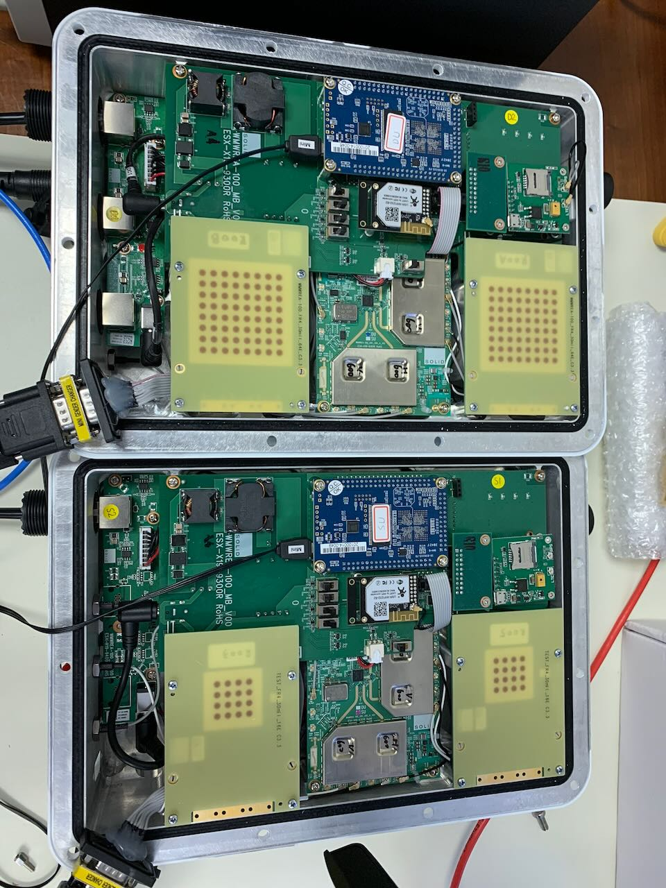
04 / 5G Repeater System
Worked with SOLID to create a browser-based interface to remotely set up and configure a 5G repeater system for cell phone stations.